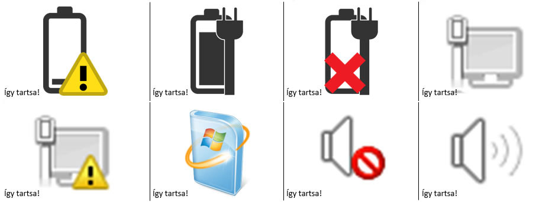

Tanyanyag oldal
1. óra - Barátkozás az infokommunikációs eszközünkkel
Célja:
A képzés során használt infokommunikációs eszköz alapvető működtetéséhez szükséges funkciók (be és kikapcsolás, készenléti állapot és annak elhagyása) megismerése, használata.
A képzés során használt infokommunikációs eszköz beviteli módjainak (billentyűzet, egér, érintőképernyő) megismerése.
1. Bevezetés
A feladat célja az oktató bemutatkozása, a képzési program bemutatása, továbbá, hogy a résztvevők megkapják és megismerjék a SÚGÓ füzet szerepét, helyét a tanulási folyamatban.
SÚGÓ füzet fontossága:
A SÚGÓ-t azért készítették, hogy megkönnyítsék Neked a képzési programon való részvételt. Tartalmazza a képzési programmal, a program oktatójával, a csoport tagjaival és nem utolsó sorban a tananyaggal kapcsolatos információkat. A SÚGÓ-ba lefűzheted a kapott munkalapokat, emlékeztetőket, feljegyezhet minden Neked fontos dolgot, ami a képzési programon történik.
Minden alkalommal hozd magaddal a SÚGÓ-dat!
2. Ismerjük meg egymást!
A feladat célja, hogy a csoport tagjai megismerjék egymást.
Mutatkozzunk be egyásnak!
Mi az, amit fontosnak tartok magamról, hogy a többiek is tudjanak?
Ha van rá igény, illetve kellő idő, a SÚGÓ füzetbe a résztvevők beírhatják egymás neveit.
3. Szerződéskötés
A feladat célja a képzés kereteinek közös meghatározása, elfogadása.
A csoport egyezzen meg a program során alkalmazandó közös szabályokról. Ezek lehetőleg rövid, közérthető mondatok legyenek, pl.: késés az óráról, mobiltelefon használata, névkitűző viselése, hangnem, tegeződés, a másik meghallgatása, stb.
4. Ezért vagyok itt!
A feladat célja a tanulási motiváció és az IKT eszközökkel szerzett eddigi tapasztalatok összegyűjtése, az egyéni tanulási célok megfogalmazása.
1. részfeladat:
Tanulási motiváció és a korábbi tapasztalatok felmérése.
Mondj egy pár szót a tanulási szokásaidról!
Azért szeretek tanulni, mert... vagy azért nem szeretek tanulni, mert...
Rögzítsd a megállapításaidat a kiosztott IKER_1.1.4_SÚGÓ munkalapra.
2. részfeladat:
A második részfeladat célja, hogy a résztvevők megismerkedjenek az IKER önértékelő eszközzel, egyben képet kapjanak arról, hogy milyen digitális kompetenciák tartoznak az 1. szinthez, mik azok ezek közül, amiket a képzés során meg fognak szerezni. A digitális világban való boldogulásnak különféle részterületei vannak és lehetséges, hogy valaki egyes részterületeken egészen magas szinten áll, míg másokon kevésbé előrehaladott.

Az önértékelő táblázat öt oszlopa a digitális írástudás öt részterületét jeleníti meg. Ez egy nemzetközi csoportosítás, az egyik oszlop például kifejezetten arról szól, hogy biztonságosan használjuk az eszközünket, míg a másik inkább arról, hogyan tudunk másokkal kapcsolatot tartani. Ezen a tanfolyamon kifejezetten ezen a szinten igyekszünk megerősíteni a kompetenciáinkat, de aki belejön a tanulásba a későbbiekben - az IKER 1. szintű képzés elvégzését követően - tovább haladhat (IKER 2. képzés - február).
A képzés során nagyon sok mindennel fogunk foglalkozni.
Keresd meg a fenti képen, hogy hol találhatók az alábbi példák:
- meg fogjuk tudni nézni a várható időjárást, vagy a hétvégi meccs eredményét
- fogunk küldeni néhány soros e-mailt
- fogjuk használni a billentyűzetet, az egeret, vagy az érintőképernyőt
- magabiztosan fogjuk működtetni a képzés során használt eszközünket
- fogunk beszélni a gyanús tartalmú levelekről is.
Sikerült-e mindet megtalálni, volt-e olyan oszlop, aminek egyik példáját sem találtad meg?
Találtál-e esetleg a példák között olyat, ami különösen érdekel téged?
3. részfeladat
A SÚGÓ munkalapodra röviden írd fel a választ az "Azt várom ettől a tanfolyamtól, hogy..." kérdésre.
Fogalmazz meg legalább egy, számodra fontos, konkrét, a digitális eszközökhöz kapcsolódó célt is!
5. Kezdjük az ismerkedést!
A feladat célja, hogy a résztvevők számára világossá váljanak az egyes eszközök között lévő hasonlóságok és különbségek a felhasználás gyakori formái szerint.
Eszközök:

Válaszold meg, hogy mely tulajdonságok mely készülékeket jellemzi?
- időnként tölteni kell
- nem lehet tölteni, mindig be kell dugni a konnektorba
- a zsebemben is elfér
- két kézzel fogva kényelmes tartani
- két kézzel tartani nehéz, egy asztalra kell helyezni
- nagy mérete miatt egy asztalra kell helyezni
- kényelmes rajta filmet nézni
- kényelmes rajta zenét hallgatni utazás közben
- lehet vele fényképezni
- bárhol fel tudnak hívni rajta
- könnyen magammal vihetem
- lehet vele internetezni
- érintőképernyője van
- lehet vele telefonálni
- kényelmes rajta hosszú szövegeket írni
Fűzd le a kioszott IKER_1.1.5_SÚGÓ munkalapot!
6. Alapfunkciók használata
A feladat célja, hogy a résztvevők megismerjék az általuk hozott, vagy a rendelkezésükre bocsátott eszközök gombjainak funkcióit, használatát, a beviteli módjait (billentyűzet, egér, érintőképernyő).
1. részfeladat:
Először szemrevételed az eszközöket!
Próbáld ki-bekapcsolni, illetve alvó állapotba helyezni az eszközödet!
Megnézheted hozzá a kiosztott IKER_1.1.6._SÚGÓ munkalapodat.
Érdemes megemlíteni, hogy a különböző eszközök különböző sebességgel kapcsolnak be. A PC-k és laptopok lassan lesznek használatra készek, míg az okostelefonok és táblagépek legtöbbször csak 'alszanak', így gyorsan használatba lehet őket venni. A készenléti / alvó állapot arra jó, hogy az IKT eszköz ilyenkor kevesebb áramot fogyaszt és - a kikapcsolt állapotban lévő eszközhöz képest - gyorsabban vissza lehet kapcsolni, ha csak újra szükség van rá.
Számítógépet használsz? Akkor a kiosztott IKER_1.1.6_F munkalapot kell átnézned!
2. részfeladat:
A billentyűzet minden eszközön megjelenik, ezért fontos, hogy a legfontosabb billentyűket megismerd, magabiztosan kezeld. A következő alkalmakon sokszor fogjuk használni a billentyűzetet és az egeret / ujjmozdulatokat az érintő képernyőn.
Mondd el, hogy mire valók az alábbi billentyűk?
Enter, szóköz, Shift, törlés, kukac, AltGr, Ctrl, Esc, Caps Lock, stb.
Ennek támogatására nézd meg az IKER_1.1.6_SÚGÓ_PC+laptop és az IKER_1.1.6_SÚGÓ_okoseszköz segédleteket.
7. Az egység zárása
A feladat célja az otthoni feladat kiadása, közös értelmezése, illetve az, hogy a résztvevők lehetőséget és egy kis időt kapjanak a SÚGÓ füzetbe való jegyzetelésre.
Töltsd ki egyénileg az IKER_1.1.7_SÚGÓ segédletedet! Ezen fognak szerepelni a jegyzeteid a mai alkalomról, valamint, hogy mit tanultál ma, mit viszel haza.
Otthoni feladat:
- Keress az általad használt IKT eszközről valamilyen hirdetést, pl. ingyenes hirdetési újságban, stb.!
- Gyűjtsd össze, hogy mit írnak róla: például milyenek a tulajdonságai, mire használható stb.! Akár ki is vághatod a hirdetést, be is ragaszthatod az IKER_1.1.7_SÚGÓ segédletre és be is karikázhatod a jellemzőket.
- Jelöld meg, hogy melyik jellemző ismerős és melyik ismeretlen az számodra!
2. óra - Az első lépések a használatban I.
Célja:
A digitális eszközökhöz kapcsolódó alapvető fogalmak (pl. program, alkalmazás, ikon) megismerése és használata.
A digitális eszközök alapvető funkcióinak önálló használata.
1. Ráhangolódás
A feladat célja, hogy a résztvevők feldolgozzák az otthoni feladat megoldását, esetleges nehézségeit.
Egy pár mondatban fogalmazd meg, hogy mikor és hogyan találkoztál IKT eszközzel!
Találtál-e olyan sajátosságot, tulajdonságot, amelyet már ismertél és melyek ezek?
Találtál-e olyan sajátosságot, tulajdonságot, amelyet még nem ismertél és melyek ezek?
2. Az eszközök alap-funkcióinak használata, gyakorlása.
A feladat célja, hogy a résztvevők megismerjék a képzés során használt digitális eszközük be és kikapcsolásának, alvó módba helyezésének lépéseit.
Egy pár mondatban fogalmazd meg, hogy hogyan lehet:
- bekapcsolni
- alvó módba hozni
- alvó módból felébreszteni
- kikapcsolni az általad használt IKT eszközt?
Nyugodtan használd hozzá az előző alkalommal kapott 1.1.6_SÚGÓdat!
3. Az IKT eszközre jellemző alapfogalmak megbeszélése
A feladat célja, hogy a résztvevők megismerjék és megértsék az IKT eszközökre jellemző alapfogalmakat.
Mi jut eszedbe azokról a szavakról, hogy:
- program
- alkalmazás
- ikon
- futtatás/elindítás
- program bezárása
Mit takarhatnak ezek a fogalmak?
- hardver
- szoftver
- operációs rendszer
Miért jó, hogy vannak ikonok?
Szemléltetésként nézzük meg az IKER_1.2.3_F munkalapot! Az előforduló fogalmak magyarázatához kattints a fenti menüsor Fogalmak menüpontjára!
4. Szoftverek keresése, megnyitása, bezárása az IKT eszközön
A feladat célja, hogy a résztvevők magabiztossá váljanak a különböző alkalmazások megnyitásában, bezárásban, ikonjuk, nevük alapján azokat megtalálják.
1. részfeladat
Keresd meg az alábbi alkalmazásokat a laptopodon/számítógépeden:
Lomtár, számítógép, Internet Explorer, Hangrögzítő, Jegyzettömb, Paint, WordPad, Távoli asztal kapcsolat, Windows intéző, Opera böngésző, Google Chrome, Firefox, Safari böngésző.
Amennyiben tableted/okostelefonod van, keresd meg a következőket:
óra, üzenetek, naptár, beállítások, böngésző, fényképezőgép, kamera, galéria, fényképek, témák, videók, időjárás, riasztások, áruház, e-mail, FM rádió, Skype, számológép, térképek, fotók, telefon, tárcsázó, jegyzet, hangrögzítő.
2. részfeladat
Gondold végig, hogy könnyű volt-e megtalálni az alkalmazásokat?
Segítettek-e az ikonok a szoftver megtalálásában?
Mi tetszik az eszköz kezelésében?
5. A szoftverek felhasználási lehetőségei
A feladat célja, hogy a résztvevők megismerjék az előző feladatban is megnyitott alkalmazások alapvető felhasználási lehetőségeit, illetve összekössék az alkalmazások neveit azok ikonjaival.
Válaszolj pár mondatban, hogy mire tudnád használni ezeket a szoftvereket a mindennapokban?
Fűzd le az IKER_1.2.5_SÚGÓ_PC+laptop munkalapot, ha PC-t vagy laptopot használsz!
Fűzd le az IKER_1.2.5_SÚGÓ_okoseszköz munkalapot, ha táblagépet vagy okostelefont használsz!
6. Az egység zárása
A feladat célja az otthoni feladat kiadása, közös értelmezése, illetve az, hogy a résztvevők lehetőséget és egy kis időt kapjanak a SÚGÓ füzetbe való jegyzetelésre.
Töltsd ki egyénileg az IKER_1.2.6_SÚGÓ segédletet, egészítsd ki ennek a munkalapnak a jegyzeteit és fűzd le! Valamint erre a munkalapra rögzíts az otthoni feladat válaszait is!
Otthoni feladat:
- Kérdezd meg családtagodat, barátodat, ismerősödet, hogy az IKT eszközén milyen programokat, alkalmazásokat szokott használni?
- Mit ábrázol és hogyan néz ki azok ikonja?
- Mire használja őket?
3. óra - Az első lépések a használatban II.
Célja:
Az IKT eszközök alapvető visszajelző funkcióinak megismerése.
Az IKT eszközök alapvető funkcióinak megismerése, önálló használata.
Az infokommunikációs eszközök használatával kapcsolatos pozitív attitűd fejlesztése, nyitottság a tudásuk további bővítésére.
Egyszerű, a matematikai alapműveletek gyakorlását is segítő alkalmazások megismerése, használatuk elsajátítása.
Azoknak a módoknak és a közöttük lévő különbségeknek a megismerése és értelmezése, melyekkel az IKT eszközök az internetre csatlakoztathatóak.
1. Ráhangolódás
A feladat célja, hogy a résztvevők feldolgozzák az otthoni feladat megoldását, esetleges nehézségeit.
Egy pár mondatban fogalmazd meg, hogy miben fejlődtél?
Milyen alkalmazások kerültek lejegyzetelésre?
2. Szoftverek megnyitása
A feladat célja az előző alkalommal elsajátított, az alkalmazások megnyitásának és bezárásának felelevenítése.
Keresd meg az alábbi alkalmazásokat a laptopodon/számítógépeden, nyisd meg és zárd be őket!
Lomtár, számítógép, Internet Explorer, Hangrögzítő, Jegyzettömb, Paint, WordPad, Távoli asztal kapcsolat, Windows intéző, Opera böngésző, Google Chrome, Firefox, Safari böngésző.
Amennyiben tableted/okostelefonod van, keresd meg a következőket, nyisd meg és zárd be őket!
óra, üzenetek, naptár, beállítások, böngésző, fényképezőgép, kamera, galéria, fényképek, témák, videók, időjárás, riasztások, áruház, e-mail, FM rádió, Skype, számológép, térképek, fotók, telefon, tárcsázó, jegyzet, hangrögzítő.
Beszélj ezek ikonjairól is!
3. Életszerű feladatok az eszközök használatával
A feladat célja, hogy a résztvevők életszerű helyzetben kezdjenek el használni egy nagyon egyszerű alkalmazást, amihez jó kiindulás a számológép.
Hogyan szoktál kiszámolni dolgokat a mindennapi életben?
Például hogy számolod ki, hogy mennyibe kerülne egy közös családi kirándulás egy közeli állatkertbe?
Ehhez nyúj segítséget a kiosztott IKER_1.3.3_F munkalap kártyái.
Keresd meg és nyisd meg az IKT eszközödön a számológép szoftvert és számold össze a segítségével, mennyibe kerülne összesen a közös családi kirándulásod!
4. Mit jelez, hol jelez?
A feladat célja, hogy a résztvevőkben tudatosodjon, hogy az IKT eszközeik jelzéseket adnak, amikre figyelniük kell.
A saját, vagy megismerni kívánt infokommunikációs eszközödön milyen jelzésekkel, esetleg hibaüzenetekkel találkoztál eddig?
Hol jelentek meg ezek?
Hogy/honnan jöttél rá, mit szeretne velük tudatni az eszközöd?
Ehhez segítséget nyúj az IKER_1.3.4_F segédlet képei.

Kiegészítésként elmondható, hogy vannak az eszközöknek olyan jelzései, amik megjelennek és nem hagynak továbblépni addig, amíg nem kezdünk velük valamit. Más jelzések viszont csak megjelennek és nekünk kell észrevenni, értelmezni, mit jelenthetnek.
5. Az eszköz jelzéseinek megismerése
A feladat célja, hogy rögzüljenek a résztvevőkben az eszközök egyes jelzései, ezek jelentései.
Párosítsd össze az okostelefonod jelzésit a megfelelő jelentésekkel!


Párosítsd össze a számítógéped jelzéseit a megfelelő jelentésekkel!


6. Csatlakozás az internethez
A feladat célja, hogy a résztvevők megismerkedjenek az eszközök internetre való kapcsolódásának különböző módjaival, lehetőségével.
Mondd el, hogy van-e olyan eszközöd otthon, ami csatlakozik az internethez?
Tudod-e, hogyan csatlakozik az internethez?
Tudsz-e más módot, ahogy lehet csatlakozni az internethez?
7. Az egység zárása
A feladat célja az otthoni feladat kiadása, közös értelmezése, illetve az, hogy a résztvevők lehetőséget és egy kis időt kapjanak a SÚGÓ füzetbe való jegyzetelésre.
Töltsd ki egyénileg az IKER_1.3.7_SÚGÓ segédletet, egészítsd ki ennek a munkalapnak a jegyzeteit és fűzd le! Valamint erre a munkalapra rögzíts az otthoni feladat válaszait is!
Otthoni feladat:
- Kérdezd meg családtagodat, barátodat, ismerősödet, hogy szokott-e internethet csatlakozni?
- Ha igen, hogyan csatlakoznak az internethez?
- Miért szoktak felmenni az internetre?
4. óra - Az első létrehozott tartalmak
Célja:
Egyszerű tartalmak létrehozására alkalmas programok megismerése, használata.
A biztonságos tárolás, adatkezelés elemi szabályainak megismerése, használata.
Egyszerű digitális tartalmak létrehozása, azok mentése, előhívása.
1. Ráhangolódás
A feladat célja, hogy a résztvevők feldolgozzák az otthoni feladat megoldását, esetleges nehézségeit.
Az elmúlt alkalom óta mikor és hogyan találkoztál IKT eszközzel?
Volt-e olyan személy az ismeretségi körödben, akinek nincs olyan eszköze, amivel az internethez lehet csatlakozni?
Melyik megoldást tartod számodra legjobbnak: vezetékes csatakozás, vezeték nélkül csatlakozás (wifi), mobil internettel való csatlakozás?
2. A keresett alkalmazások megmutatása, ikonok felismerése
A feladat célja, hogy a résztvevők átismételjék és gyakorolják az alkalmazások megkeresését, megnyitását és bezárását.
Mutasd meg, hogy a legutóbbi alkalommal melyik alkalmazásokat kerested meg az eszközödön, mi az ikonja, hogyan kell azt elindítani és bezárni!
Bátran használd hozzá a SÚGÓkat!
3. Hangfelvételt készítő alkalmazás használata
A feladat célja, hogy a résztvevők életszerű helyzetben kezdjenek el használni egy olyan rendkívül egyszerű, kevés lépést igénylő alkalmazást, mellyel saját tartalom hozható létre. Ilyen a minden eszköztípuson elérhető hangfelvétel készítő alkalmazás.
Hogyan készíthetsz hangfelvételt, hogyan lehet ezeket elmenteni, visszahallgatni, törölni?
Segítségül hívhatod ehhez a kiosztott IKER_1.4.3_SÚGÓ_PC+laptop és az IKER_1.4.3_SÚGÓ_okoseszköz segédleteket.
Érdemes megemlíteni, hogy az okoseszközök hangrögzítés alkalmazásainak többsége nem igényel külön mentést, az eszköz ezt automatikusan elvégzi. Azt is fontos, hogy a törlés ezeken az eszközökön végleges, az állomány nem állítható vissza (nincs lomtár).
4. Egyszerű szöveg létrehozása, mentése, előhívása, törlése
A feladat célja, hogy a résztvevők a hangfelvételek készítése után egyszerű szöveges tartalmakat is hozzanak létre, azokat mentsék, töröljék.
Hogyan szoktad megjegyezni a tennivalóidat?
Ha hallasz egy jó receptet, akkor hogyan jegyzed meg?
Ha bevásárló listát kell készítened, azt hogyan jegyzed fel?
A kérdések lényege, hogy átgondoljad, hogy amikor adatok, információk írásbeli rögzítésére van szükség a mindennapjaidban, akkor azt hogyan szoktad megtenni.
Indítsd el a Jegyzettömb nevű alkalmazást a számítógépen és írj bele pár sort, pl. a következő találkozások időpontjait!
Mentsd el ezt a szöveges állományt, majd próbáld újra megnyitni!
5. Kapcsolódó kérdések tisztázása
A gyakorlat első részének célja, hogy az oktató egy önértékelő részt biztosítson a résztvevőknek (mely területet mennyire találták nehéznek, melyeknél érzik úgy, hogy több gyakorlásra van szükségük). A gyakorlat második részének célja, hogy az oktató aktív részvételével a résztvevők összegezzék a tapasztalataikat, ennek során visszajelzést is kap az oktató az esetleges nehézségekről.
Melyik feladat volt a könnyebb, melyik volt nehezebb?
Mire tudnád használni ezeket az alkalmazásokat a mindennapokban?
Mikor kell engedélyt kérnem attól, akinek a hangját felveszem?
6. Az egység zárása
A feladat célja az otthoni feladat kiadása, közös értelmezése, illetve az, hogy a résztvevők lehetőséget és egy kis időt kapjanak a SÚGÓ füzetbe való jegyzetelésre.
Töltsd ki egyénileg az IKER_1.4.6_SÚGÓ segédletet, egészítsd ki ennek a munkalapnak a jegyzeteit és fűzd le! Valamint erre a munkalapra rögzíts az otthoni feladat válaszait is!
Otthoni feladat:
- Készíts hangfelvételt! A felvételeket mentsd el és nevezd el a tartalma szerint!
- Jegyzetelő alkalmazás segítségével készíts rövid bevásárló listát vagy teendő listát! Mentsd el olyan névvel, ami a tartalomra utal!
5. óra - Böngészés az interneten I.
Célja:
Az IKT eszköz egy előre telepített internet böngészőjének megismerése és használata.
Az internet böngésző alapvető funkcióit használva weboldalakon könnyen hozzáférhető információk gyűjtése.
Egyszerű keresőszavak használatával keresés indítása.
A keresések egyértelmű eredményei közül a megfelelő kiválasztása.
6. óra - Böngészés az interneten II.
Célja:
A böngészők használatának megerősítése, önálló tanulás lehetőségeinek biztosítása, a weboldalakon elérhető információk keresése, felhasználása, értékelése.
7. óra - Elektronikus levelezés I.
Célja:
E-mail cím létrehozása a biztonságos jelszavak és megfelelő felhasználói nevek megválasztásával.
Elektronikus levelezés egyszerű funkcióinak használata.
Az elektronikus kommunikáció legalapvetőbb szabályainak megismerése és betartása (Netikett).
8. óra - Elektronikus levelezés II.
Célja:
Elektronikus levelezés bővített, de egyszerű funkcióinak használata.
Elérhetőségek kezelése az IKT eszközön.
9. óra - Hanghívásra alkalmas alkalmazások
Célja:
Az infokommunikációs eszközök felhasználása verbális kommunikációra.
10. óra - Gyakorlunk, gyakorlunk, gyakorlunk
Célja:
Az elsajátított ismeretek gyakorlása.
Záró feladatmegoldás.
A képzési programra, a saját fejlődésre való visszajelzés adása.